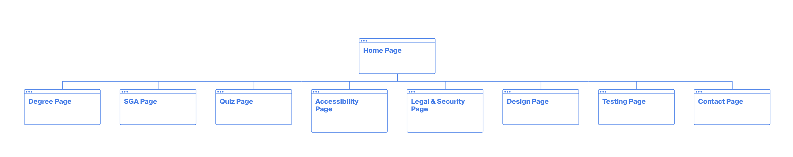
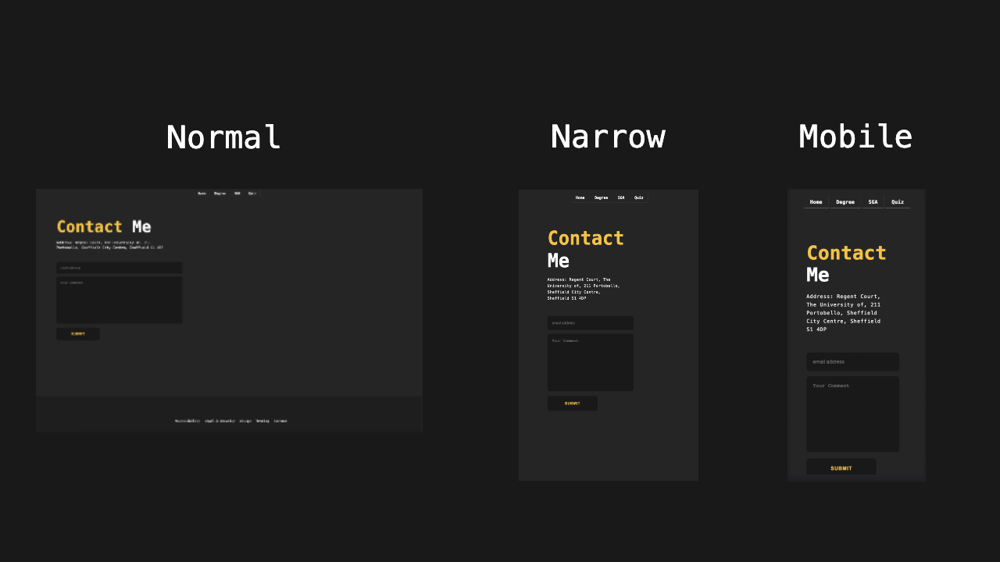

Introduction
The general idea of my design comes from minimalism. I want my website to have a very minamilistic look so that's why I designed it this way. I also chose this color palette because it's minimalistic & also contrasts very well.
How I designed the website
The approach I took for the website is mobile-first responsive web design. The idea of mobile-first responsive web design is starting to design mobile devices first. Considering this, I started out by designing mock-ups using figma for mobile devices first.
Site Map
Design Mock-ups
During my design process, I decided to only use two breakpoints. My first breakpoint was under 500px, the second one was over 500px. I also have a few tweakpoints at 750px, 1000px & 1100px. The main reason I only went for 2 breakpoints was to keep things simple. I had one for mobile devices and the second one for desktop devices. With my approach of mobile first webdesign, the main css code that was written was used to design mobile devices first. I then set a media query of min-width: 500px, to make changes for the desktop version and anything that looked off I added tweak points.
Menu System
The menu system that I chose is the grid based navbar. The reason I chose the grid based navbar is because it looked the most structured and orderly to me. It also fits the minamilistic theme I was going for. Not only that, my choice is also very economical because the navbar only took 7 lines of html code and only 4 lines of css.